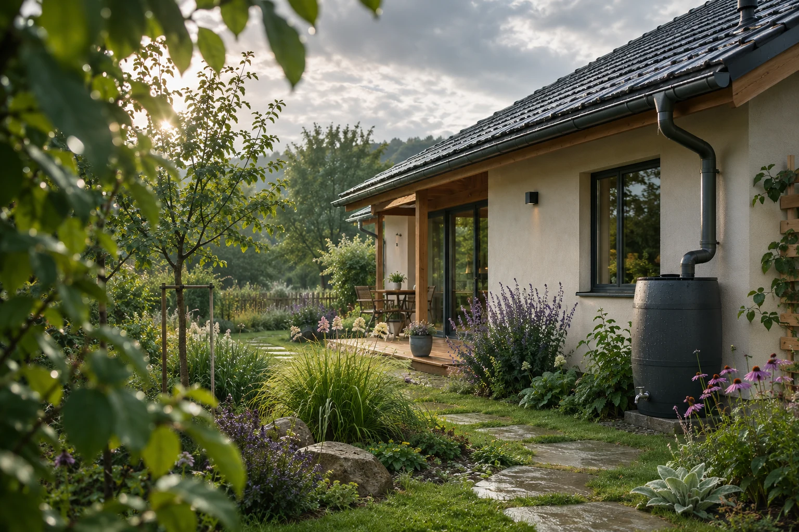
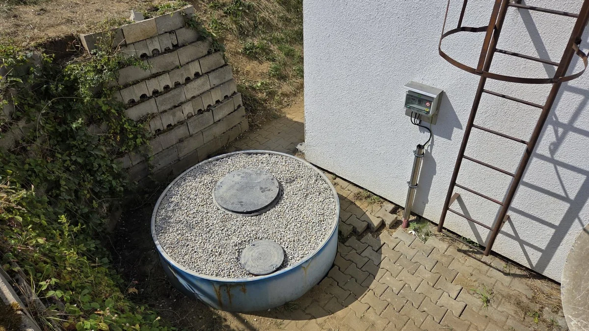

STANDARD
2scheduled service
visits per year
- Regular inspection of the technology
- Basic maintenance and assessment of operation
- Recommendations to keep your WWTP working properly

Illustrative visualisation
WHO WE WORK FOR
REGULAR WWTP SERVICING
Two service programmes, depending on how much care your treatment plant needs. We service technologies from various manufacturers, not just equipment we supplied ourselves.
STANDARD
2scheduled service
visits per year
PREMIUM
4scheduled service
visits per year
We prepare every quote individually, based on the manufacturer, type and size of the WWTP, the technical condition of the equipment, the location and the scope of services required.
01 / OUR SOLUTIONS
A household, a business, a municipality or existing technology.
Choose the area you are dealing with right now.
 FROM OUR PROJECT
FROM OUR PROJECT01 / DOMESTIC TREATMENT PLANTS
A new house or a cottage with no sewer? We will design a treatment plant to suit the way your household runs, your plot and the options for discharging the treated water.
Technology and design documentation to suit local conditions.
Supply, installation, commissioning and an explanation of how to operate it.
Servicing and maintenance to keep your treatment plant running.

FROM OUR PROJECT02 / BUSINESSES AND MUNICIPALITIES
Treatment plants for guesthouses, hotels, leisure and production sites, and municipalities. We design the technology and the scope of supply around the needs of the specific operation.
Assessment of the brief, design preparation and technology design.
Technology units, water treatment and capacity upgrades of existing WWTPs.
We carry out the work with our own resources or in cooperation with specialists.
 FROM OUR PROJECT
FROM OUR PROJECT04 / RAINWATER
Rainwater can be used for watering and for selected household needs. Together we will choose the tank, pumping and pipework according to how you want to use it.
We take into account the roof, the planned use and the conditions of the plot.
We follow on with pumping and suitable pipework.
The design also covers what to do with surplus water.
05 / PUMPING TECHNOLOGY
When water cannot drain away by itself, properly designed pumping helps. We adapt the technology to the terrain, the pipe route and the way the building is used.
We start with the site conditions and the connection options.
We link up the shaft, the pumping and the necessary pipework.
We set up operation and provide subsequent maintenance.
 FROM OUR PROJECT
FROM OUR PROJECT03 / SERVICING AND MAINTENANCE
Has your system stopped working as it should? We provide diagnostics, repairs and regular care for domestic and larger WWTPs from various manufacturers — including those we did not supply ourselves.
The type of equipment, its age and a description of the problem all help.
Maintenance, replacement of components or a refurbishment proposal based on the actual condition.
Operational settings, recommendations for the operator and the option of a long-term service contract.
ONE-OFF SERVICE, REPAIRS AND COMMISSIONING
You can order a one-off visit even without a service programme – including for equipment we did not supply.
A SMALL CHANGE. THE RIGHT DIRECTION.
From the roof into the tank. From the tank back into the garden. We will design a way of using rainwater based on what your house and plot need.
How to use rainwater
02 / FROM OUR WORK
Real projects. Real photos.
See what we have solved together.
DOMESTIC TREATMENT PLANTBC 4 COMFORT DUO treatment plant with a sand filter.
RAINWATERRoterra 3500 L tank with a pump for the garden.
Conversion of the original WWTP and connection to the sewer.
REFURBISHMENTNew technology while keeping the original structure.

 In person.
In person.03 / THE PEOPLE BEHIND THE SOLUTIONS
We are a family business from Tábor. We combine design, installation and servicing — so you have someone to turn to at every stage.
First we listen. Then we design. For households, businesses and municipalities, we deliver solutions with our own resources or in cooperation with specialist partners.
Let's get acquaintedA DESIGN PARTNER'S EXPERIENCE
We have worked with Čistá řešení for a long time; they build the water management projects we design, with a particular focus on wastewater treatment. Our customers especially appreciate their flexibility with timing, their reliable and professional approach and their honest after-sales care – which, in my opinion, is one of the most important values in our field. I can certainly recommend them to anyone looking for quality services.
TECHNOLOGY AND BUSINESS PARTNERS
We are an independent supplier: we choose the technology to suit your needs, not a single manufacturer.
COMPREHENSIVE WATER MANAGEMENT SOLUTIONS
We don't just supply stand-alone technology.
We take care of your job from design through to servicing.
BUSINESSES, MUNICIPALITIES AND INDUSTRY
We also provide new treatment plants, refurbishment and long-term care for municipalities, accommodation facilities and manufacturing companies.
WHERE WE OPERATE
For larger projects, we also work
outside these regions.
Not at all. Tell us what you are dealing with and give the town or village where the plot is located. At the initial consultation we will work out the next steps together.
Yes, our offer includes the design documentation and arranging the building permit. The exact scope depends on the chosen solution and local conditions.
Yes. We service domestic, commercial and industrial wastewater treatment plants (WWTPs) from various manufacturers, including equipment we did not supply ourselves. For an initial assessment, it helps to know the manufacturer, the type of equipment, the town or village and a brief description of the problem. If you don't know the manufacturer or the type, we will go through it together.
Above all, the suitable technology, the size and condition of the property, the conditions on the plot and the scope of work. That is why we only put a quote together once we know your specific requirements.
LET'S START WITH A CONVERSATION
A new installation, a repair or regular servicing?
Choose the type of enquiry and write a few words. We'll go through the rest together.
Directly with people who understand water.
We will get back to you as soon as possible.